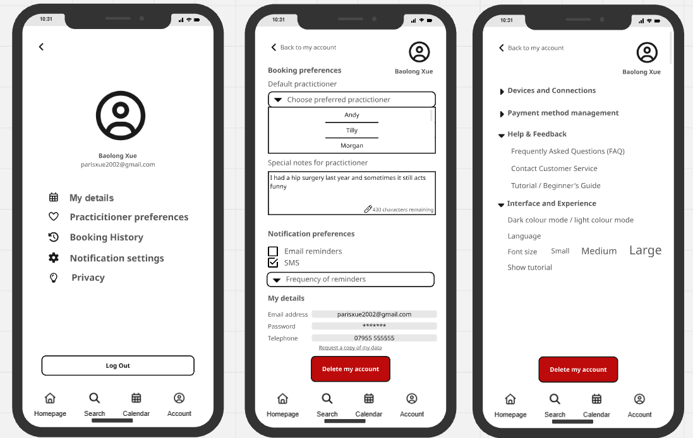
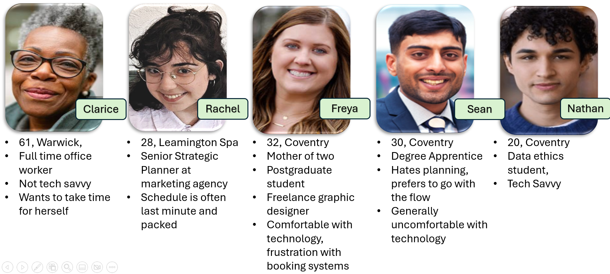
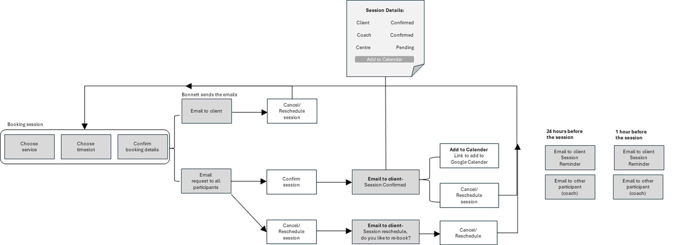
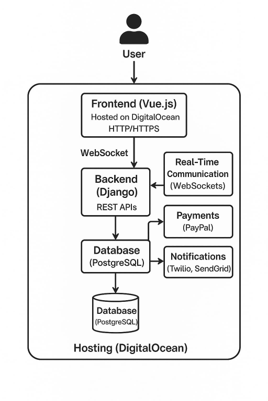

Featured UX & Product Design Project
A UX and systems design project focused on transforming a Coventry wellness centre’s manual booking process into a scalable digital platform with integrated scheduling, accessibility-first UX, and administrative workflow tools.

Bonnett’s Body & Being is an independent wellness centre offering massage therapy, yoga classes, counselling, and wellness events. The business relied heavily on manual scheduling through phone calls, emails, and shared calendars.
Our team proposed a scalable digital booking ecosystem designed to reduce administrative workload, improve client experience, and support long-term business growth.
Staff managed appointments manually using phone calls, emails, and shared calendars, resulting in scheduling conflicts and inefficiencies.
Practitioners and administrators spent excessive time managing cancellations, reminders, and client communication.
The business lacked digital tools for reminders, feedback collection, promotions, and repeat booking flows.
Existing tools provided poor mobile usability and did not support accessibility best practices.
Research focused on both operational stakeholders and end users to understand scheduling pain points, accessibility concerns, and engagement opportunities.
Needed reduced admin workload, calendar visibility, and simplified scheduling tools for non-technical staff.
Required clearer schedules, fewer no-shows, and flexible cancellation management.
Needed better event promotion tools, audience segmentation, and automated follow-ups.
Wanted a simple, mobile-friendly booking experience with flexibility, accessibility, and transparent pricing.
Multiple personas were developed to represent different accessibility needs, scheduling behaviours, and levels of digital confidence.

Five personas representing different user needs, accessibility requirements, and booking behaviours.
The platform was designed around accessibility, flexibility, and operational simplicity.
Interfaces followed WCAG 2.1 principles including large touch targets, strong contrast ratios, and readable layouts.
The booking flow minimised unnecessary steps and supported both guest checkout and optional account creation.
Mobile-first layouts ensured users could manage bookings easily across devices.
Users could select preferred practitioners, view booking history, and receive automated reminders.
One of the most important stages of the project involved balancing conflicting stakeholder requirements.
Two-factor authentication was implemented only for administrative tools to maintain security without increasing client-side friction.
Instead of deploying a complex AI chatbot, the solution prioritised streamlined FAQs and contact workflows.
Flexible payment options were prioritised to better support client scheduling behaviour and reduce booking abandonment.
User onboarding workflow showing the journey from account creation through appointment booking and ongoing engagement.

User onboarding workflow illustrating the booking and account creation process.
Medium-fidelity platform interfaces were created to demonstrate the client booking journey, practitioner workflow management, and administrative oversight functionality.
Clients can browse services, manage appointments, and complete bookings through a mobile-friendly workflow.
Practitioners can manage appointments, review schedules, and track client interactions.
Administrators can oversee bookings, practitioner schedules, reporting, and operational activity from a single interface.

Proposed system architecture showing frontend, backend, database, and real-time scheduling components.
Selected for responsive UI development, scheduling interfaces, and rapid component-based development.
Django provided strong security, scalable booking logic, and structured backend workflows.
Used for secure storage of bookings, practitioner schedules, and user records.
WebSockets enabled live calendar updates and real-time booking synchronisation.
Accessibility was treated as a core design requirement throughout the project.
The proposed solution demonstrated how a digital-first booking ecosystem could reduce administrative workload, improve accessibility, streamline practitioner scheduling, and create a more consistent client experience across both client-facing and operational workflows.
Reward repeat bookings and improve retention.
Expand accessibility and improve mobile engagement.
Introduce personalised session recommendations and smarter scheduling workflows.
Improve long-term scalability, security, and GDPR compliance.